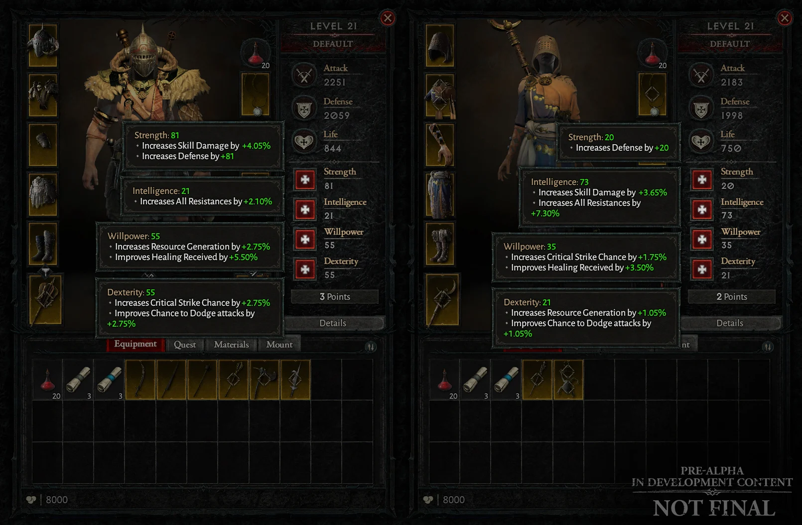

Вот и подоспел новый ежеквартальный отчёт о разработке Diablo IV — последний в этом году! В этот раз девелоперы рассказали об экипировке и затронули пару тем из прошлых статей.
Древо умений
На основе отзывов после публикации предыдущего отчёта Blizzard начала улучшать древо умений. Например, авторы увеличивают разбивку связанных узлов навыков на группы.
В Diablo IV можно менять специализацию активных и пассивных умений. Изменения можно вносить сколько угодно, но за это придётся платить. Поначалу смена специализации не окажется затратной,
однако по мере развития персонажа её стоимость будет расти.
Основные характеристики
Очки характеристик, которые выдаются за повышение уровня, можно вложить в силу, интеллект, ловкость или силу воли, а очки умений, очевидно, нужны для прокачки умений.
Многие из узлов в каждом древе умений класса имеют дополнительные эффекты, если ваши характеристики достигают определённого порога. Вы получите базовый эффект этих узлов, когда потратите очки умений
на их открытие, а бонусный эффект активируется после того, как вы поднимете нужную основную характеристику до соответствующего уровня.